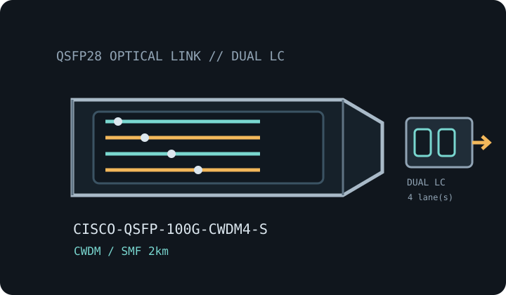

[ MODEL-SPECIFIC OPTICAL NETWORK HARDWARE ]
Cisco QSFP-100G-CWDM4-S 100G-CWDM4 QSFP28 Transceiver
Four-channel CWDM 100GbE QSFP28 optic for duplex single-mode fiber up to 2km. Confirm exact module label and host qualification before installation.

IDENTIFICATION: Match the manufacturer name, exact PID/suffix and revision to the host compatibility listing. Stated line rate and maximum reach are specifications, not measured payload performance.
Model-specific specifications
| Dedicated subcategory | SFP transceivers: optical and copper |
|---|---|
| Exact model / ordering SKU | Cisco QSFP-100G-CWDM4-S |
| Form factor and optical type | QSFP28 hot-pluggable four-wavelength coarse-WDM optical module; 100G-CWDM4. |
| Ethernet rate and interface | 100G-CWDM4 multivendor MSA interface; nominal 100Gb/s aggregate rate (4 × 25Gb/s). |
| Wavelength | CWDM grid channels at 1271, 1291, 1311 and 1331nm. |
| Fiber medium and reach | Single-mode fiber (SMF), up to 2km per Cisco specification. |
| Connector | Duplex LC. |
| DOM / DDM | DOM supported; confirm reporting through the target switch/router software. |
| Operating temperature | Commercial operating case temperature: 0°C to 70°C. |
| Host switch/router compatibility | Check Cisco TMG for exact QSFP-100G-CWDM4-S host support, software and 100GbE port mode. Match the CWDM4 optic at the far end and observe the 2km SMF optical budget; do not treat the similar LC connector as proof of LR4 interoperability. |
| Variant and deployment caveat | CWDM4 uses a distinct channel plan and reach from LR4, ER4L and parallel PSM4. Confirm transceiver type at both endpoints, not only 100G link rate. |
| Measured performance | No measured specimen throughput is claimed; link payload depends on both host ports, FEC, coding, protocol overhead, fiber plant and test method. |
Host qualification and installation
Check Cisco TMG for exact QSFP-100G-CWDM4-S host support, software and 100GbE port mode. Match the CWDM4 optic at the far end and observe the 2km SMF optical budget; do not treat the similar LC connector as proof of LR4 interoperability.
CWDM4 uses a distinct channel plan and reach from LR4, ER4L and parallel PSM4. Confirm transceiver type at both endpoints, not only 100G link rate.
Clean and inspect fiber end faces, retain dust caps during storage, follow ESD precautions, and never look into an active optical port. Record the host model, port, software release, transceiver label and available DOM values when documenting a deployed link.
Manufacturer and standards sources
- Cisco 100GBASE QSFP-100G Modules Data SheetCisco’s 100G QSFP data sheet documents the CWDM4-S offering; Cisco TMG qualifies module PID and switch/router host support.
- Cisco Transceiver Module Group (TMG) compatibility matrixManufacturer lookup for transceiver PID, supported host platforms and software releases; confirm this exact labeled variant.
- IEEE 802.3 Ethernet standards familyEthernet PHY terminology and link-rate context; MSA-specific optics remain subject to their named module-family specifications.
Source links identify manufacturer documentation and qualification resources. Check the current documentation revision and exact hardware PID before deployment.